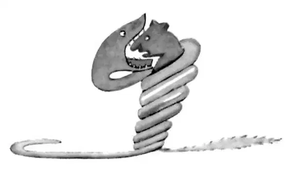
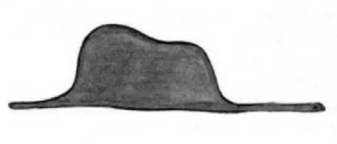
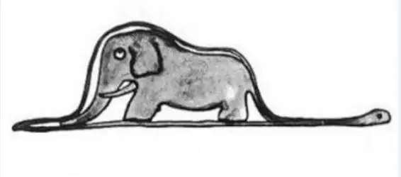

CHAPTER 1
第一章
—we are introduced to the narrator, a pilot, and his ideas about grown-ups
——我们将认识这位叙述者，一位飞行员，并了解他对成年人的看法
Once when I was six years old I saw a magnificent picture in a book, called True Stories from Nature, about the primeval forest. It was a picture of a boa constrictor in the act of swallowing an animal. Here is a copy of the drawing.
六岁那年，有一次，我在一本名为《大自然的真相》的书上，看到一幅关于原始森林壮观的插图。画面上一条大蟒蛇正要吞下一只动物。这里给出的是这幅画的摹本。

In the book it said: "Boa constrictors swallow their prey whole, without chewing it. After that they are not able to move, and they sleep through the six months that they need for digestion."
书中写道：“大蟒蛇将它们的猎物整个吞下，嚼都不嚼一下。之后它们动弹不得，一睡就是六个月，从而将食物消化掉。”
I pondered deeply, then, over the adventures of the jungle. And after some work with a colored pencil I succeeded in making my first drawing. My Drawing Number One.
于是我对森林里的惊险事件沉思良久。我拿起彩色铅笔挥舞一番后，竟成功地造就了我的第一部画作。我的一号作品。

I showed my masterpiece to the grown-ups, and asked them whether the drawing frightened them.
我把我的杰作拿给大人们看，问他们有没有被它吓到。
But they answered: "Frighten? Why should any one be frightened by a hat?"
可他们却回答道：“吓到？怎么会有人被一顶帽子吓到呢？”
My drawing was not a picture of a hat. It was a picture of a boa constrictor digesting an elephant. But since the grown-ups were not able to understand it, I made another drawing: I drew the inside of the boa constrictor, so that the grown-ups could see it clearly. They always need to have things explained.
我画的并非一顶帽子。那是一条正在消化一头大象的蟒蛇。可由于那些大人们没有看出来，我就画了另一幅画。我把大蟒蛇肚子里的情形画了出来，好让大人们看得清楚些。这些大人们总是需要让人作解释。

The grown-ups' response, this time, was to advise me to lay aside my drawings of boa constrictors, whether from the inside or the outside, and devote myself instead to geography, history, arithmetic and grammar. That is why, at the age of six, I gave up what might have been a magnificent career as a painter. I had been disheartened by the failure of my Drawing Number One and my Drawing Number Two. Grown-ups never understand anything by themselves, and it is tiresome for children to be always and forever explaining things to them.
这回大人们的回答是，劝我把我的大蟒蛇图画，不管是画出肚子内部的，还是只画出外部轮廓的，都统统放到一边，好好把心思用在地理、历史、算数和语法上。那就是为什么我在六岁时放弃了我的爱好，不然我可能成为一个伟大的职业画家。一号作品和二号作品的失败让我心灰意冷。大人们从不自己动脑思考，还总是让人不停地给他们解释，这让孩子们感到厌烦。
So then I chose another profession, and learned to pilot airplanes. I have flown a little over all parts of the world; and it is true that geography has been very useful to me. At a glance I can distinguish China from America. If one gets lost in the night, such knowledge is valuable.
因此，我后来选择了另一个行业，学会了开飞机。我几乎飞遍了世界各地。对我来说，地理还真的很管用。只看一眼，我就能够区分开中国和美国。若是夜间迷失了方向，这些知识就很有价值。
In the course of this life I have had a great many encounters with a great many people who have been concerned with matters of consequence. I have lived a great deal among grown-ups. I have seen them intimately, close at hand. And that hasn't much improved my opinion of them.
这段生活期间，我认识了很多人，他们都是些与重要事件相关的人物。我在大人们中间生活了很长一段时间。我和他们交往密切，相伴左右。但这并没有太多地改变我对他们的看法。
Whenever I met one of them who seemed to me at all clear-sighted, I tried the experiment of showing him my Drawing Number One, which I have always kept. I would try to find out, so, if this was a person of true understanding. But, whoever it was, he, or she, would always say:
每当遇上一位在我看来算得上具有敏锐眼光的成年人，我就会试探性地把我一直保存的一号画作拿出来让他看看。这样做是想看看他是否真的是一位理解能力很强的人。然而，不论是谁，不论男女，都总是回答说：
"That is a hat."
“这是一顶帽子。”
Then I would never talk to that person about boa constrictors, or primeval forests, or stars. I would bring myself down to his level. I would talk to him about bridge, and golf, and politics, and neckties. And the grown-up would be greatly pleased to have met such a sensible man.
然后我就决不会和那个人谈论有关大蟒蛇、原始森林或是星星的事情。我会把自己降到和他一样的水平。我会和他谈论桥牌，谈高尔夫，谈政治，谈领带。于是大人们会非常高兴遇上我这样一个聪明人。